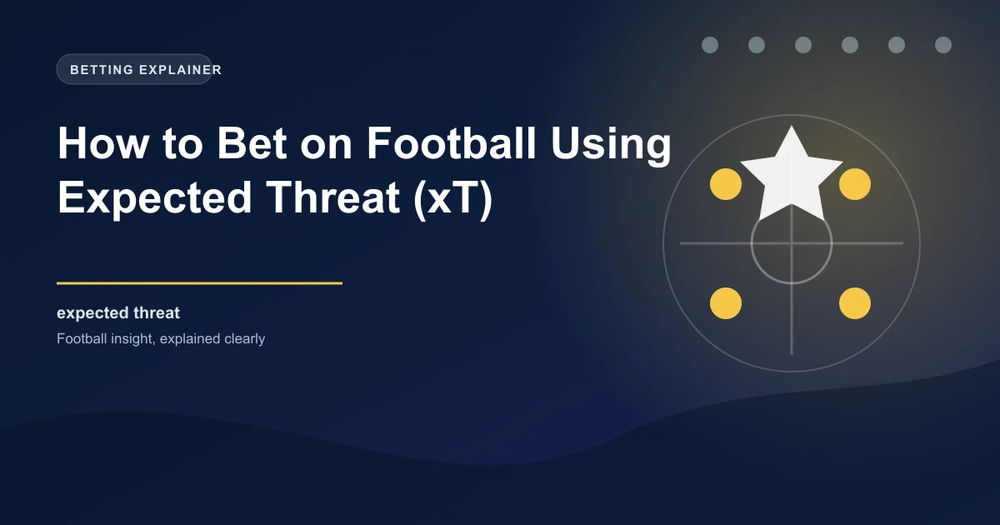

Football analytics has evolved dramatically over the past decade. While Expected Goals (xG) became the industry standard for measuring shooting quality, a newer metric called Expected Threat (xT) is gaining traction among analysts and bettors who want a deeper understanding of pitch control and possession quality. If you want to find edges in football betting that most casual punters miss, understanding xT is a powerful weapon in your analytical arsenal.
In this guide, we will break down exactly what xT measures, how it differs from other advanced metrics, how it is calculated, and most importantly, how you can apply it to your football betting strategy for smarter, more informed wagers.
Expected Threat, commonly abbreviated as xT, is an advanced football metric that measures how much a team's probability of scoring increases with each action on the ball. Unlike xG, which only evaluates the quality of a shot, xT assigns a value to every single action a team takes in possession, whether that is a pass, a dribble, a carry, or a shot.
The core idea behind xT is straightforward: not all areas of the pitch are equal in terms of goal-scoring danger. Receiving the ball in your own penalty area poses very little immediate threat to the opposition. However, receiving the ball in the opposition's penalty area is extremely dangerous. xT quantifies this gradient of danger across the entire pitch.
Think of it this way: every position on the pitch has an associated probability of a goal being scored from that location within the next few actions. When a player moves the ball from a low-threat area to a high-threat area, they have generated positive xT. When the ball moves backward or laterally into less dangerous areas, the team has generated negative xT or simply failed to add value.
xT captures the value of ball progression, not just the final action. A midfielder who consistently carries the ball from the defensive third into the attacking third may generate more xT over a match than a striker who takes two low-quality shots.
Understanding the distinction between xT, xG, and xA is essential for using these metrics effectively in betting analysis. Each one measures something fundamentally different about attacking play.
xG evaluates only the quality of a shot based on factors like distance from goal, angle, the body part used, and the type of assist. A penalty is worth roughly 0.76 xG because historically, penalties result in a goal about 76% of the time. A shot from 30 yards with no angle advantage might be worth only 0.03 xG. The limitation of xG is that it only tells you about the final action. It does not capture the journey of how the ball arrived in that dangerous position.
xA measures the likelihood that a given pass will result in a goal. It is essentially xG applied to the pass that directly precedes the shot. If a player makes a through ball that creates a one-on-one opportunity, that pass will have a high xA value. However, like xG, xA is limited to the final pass and does not capture the broader context of build-up play and positional advancement.
xT is fundamentally different because it evaluates every action, not just shots or final passes. A pass from the centre circle to the edge of the penalty area generates xT even though it is not a shot or an assist. A dribble that beats two defenders and moves the ball from the halfway line to the corner of the box generates xT. This makes xT a much more comprehensive measure of a team's ability to progress the ball into dangerous areas.
Consider a team that dominates possession with 65% of the ball but struggles to create clear-cut chances. Their xG might be low at 0.8, suggesting they are not threatening the opposition goal. However, their xT could be high at 2.4, indicating they are consistently moving the ball into dangerous areas but perhaps lacking the final ball or finishing quality. This tells a very different story and opens up different betting angles.
The xT model works by dividing the pitch into a grid of zones, typically around 16 by 12 cells. Each cell on the grid is assigned a value representing the probability of a goal being scored from that zone within a certain number of subsequent actions. These values are derived from historical data, looking at how often goals are scored when the ball is in each specific zone.
When an action occurs, such as a pass or a carry, the model calculates the change in threat by comparing the xT value of the starting zone to the xT value of the ending zone. If the ball moves from a zone worth 0.02 xT to a zone worth 0.08 xT, the action has generated 0.06 xT for the attacking team.
The most commonly used xT model was developed by Karun Singh and has been refined by various analytics groups since. The model typically considers:
xT is closely related to the concept of pitch control, which measures which team has greater influence over different areas of the pitch at any given moment. Pitch control models use player positions, velocities, and the ball location to determine which team is more likely to gain possession in each zone. When combined with xT, pitch control gives a richer picture of which team is genuinely dominating dangerous areas rather than simply having possession in safe zones.
When analyzing team xT data, look at both total xT generated and xT per action. A team with high total xT but low xT per action may simply be playing very direct football with lots of forward passes. A team with lower total xT but high xT per action may be more efficient in their ball progression.
One of the most powerful applications of xT in betting is identifying teams that genuinely control dangerous areas of the pitch. Traditional possession statistics can be misleading. A team can have 60% possession by recycling the ball between centre-backs and the goalkeeper, which generates very little threat. Another team might have 45% possession but consistently break forward into dangerous areas, generating significantly more xT.
When you analyze xT data for a match, you are looking for teams that:
Teams that rank highly in xT differential tend to be more consistent performers because their style of play gives them multiple avenues to create chances. They are not reliant on moments of individual brilliance or set pieces alone.
Now let us get to the part that matters most for bettors: how to use xT data to find value in football betting markets.
xT is particularly useful for over/under goals betting. Teams with high xT generation but low actual goal output may be underperforming their underlying numbers, suggesting they are due for a regression to the mean in terms of goals scored. Conversely, teams scoring significantly more goals than their xT suggests may be overperforming and could see their goal tallies drop.
Look for matches where both teams have high xT numbers but one or both have been underperforming their xT in recent matches. This could signal an upcoming high-scoring game where the market has not yet adjusted to the underlying data. Similarly, if both teams have low xT generation but have been lucky in front of goal, consider backing the under.
When a strong team plays a weaker side, xT data can help you assess whether the handicap line is set correctly. If the strong team has been generating xT numbers well above the league average and the weaker team has been allowing high xT to opponents, a -1.5 or -2.0 handicap may offer value. The xT data provides a more nuanced picture than simple league position or recent results.
xT helps differentiate between teams that dominate possession meaningfully and those that hold the ball without purpose. This distinction is critical for betting markets that depend on a team's ability to control the game, such as:
During live matches, xT trends can be incredibly revealing. If a team is trailing but their xT is significantly higher than their opponent's, they may be unlucky and could be good candidates for a live comeback bet. The xT data tells you whether the trailing team is genuinely creating pressure or simply chasing the game without substance.
xT is a relatively new metric and is not yet available from all data providers. Additionally, xT models may not fully account for set pieces, which can be significant goal-scoring opportunities. Always use xT alongside other analytical tools rather than as a standalone metric.
While xT is a powerful analytical tool, it is important to understand its limitations before incorporating it into your betting strategy.
For bettors looking to incorporate xT into their analysis, several data providers and platforms now offer xT statistics. FBref, powered by StatsBomb data, provides xT for major European leagues. Other providers like Opta and Wyscout also include xT in their advanced metrics packages. For casual bettors, free resources like FBref provide enough xT data to start building an analytical edge.
When using xT data, focus on sample sizes of at least 5 to 10 matches to get meaningful trends. Single-match xT numbers can be volatile, but aggregated data over several matches reveals genuine patterns in a team's ability to progress the ball into dangerous areas.
Expected Threat is one of the most exciting developments in football analytics for bettors. By measuring ball progression and positional threat rather than just final actions, xT provides a deeper understanding of which teams are genuinely dominating matches. When combined with traditional metrics and careful market analysis, xT can help you identify value bets that the majority of the betting market is missing.
Combine xT analysis with our data-driven predictions to find the best value bets across major leagues.
Build Your Ticket Win
Win